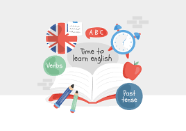

Фотографии и занятия

Индивидуальные занятия для младших школьников.

Работа с дошкольниками по игровой методике.

Групповые уроки и подготовка к школе.
Преподаватель — Понякова Татьяна Павловна
Понякова Татьяна Павловна — опытный педагог по английскому языку с многолетним стажем преподавания детям, дошкольникам и ученикам до 9 класса. Индивидуальный подход, современная методика обучения и дружелюбная атмосфера позволяют детям быстро и легко освоить английский язык.
Индивидуальные занятия для младших школьников.
Работа с дошкольниками по игровой методике.
Групповые уроки и подготовка к школе.
Чтобы узнать расписание и стоимость занятий — свяжитесь удобным способом.
Связаться